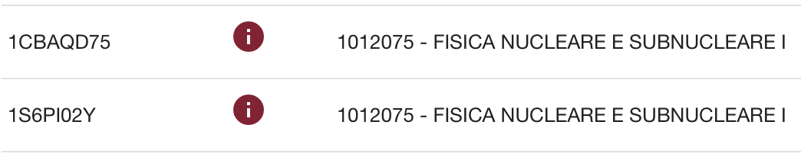
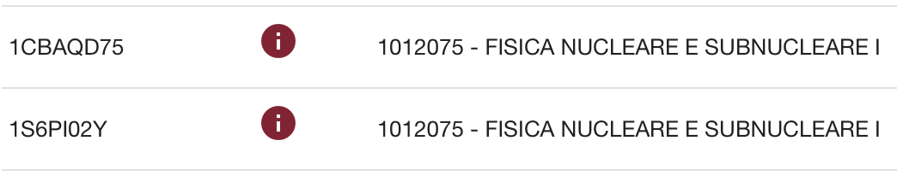

Orario Lezioni
Il corso dell'anno accademico 2018/19 inizia il giorno mercoledi` 27 Febbraio 2019
- Mercoledi` 10-12, Aula 3 , Nuovo Edificio di Fisica
- Venerdi` 12-14, Aula 3 , Nuovo Edificio di Fisica
- Dal 28/2 al 28/3 (inclusi): Giovedi` 12-14, Aula 3 , Nuovo Edificio di Fisica
Rilevazione Opinioni Studenti 2018-2019 (OPIS)
Gli studenti sono caldamente invitati a valutare il corso riempendo le schede
di valutazione (OPIS) usando uno dei seguenti codici

E` disponibile una guida per l'accesso al servizio e il riempimento dei moduli.

E` disponibile una guida per l'accesso al servizio e il riempimento dei moduli.
Esoneri
Sara` possibile consultare dispense, appunti, e formulari durante le prove di esonero ma non si possono portare o/e consultare esercizi svolti.
- Primo bonus 2019-04-17: testo e soluzioni
- Primo esonero: venerdi` 3 maggio 2019 ore 16:00: Per gli studenti di questo canale la prova avra` inizio alle ore 16:00 in Aula Amaldi. La durata della prova sara` di 2 ore. (testo e soluzioni) (Risultati)
- Secondo bonus 2019-05-31: pdf
- Secondo esonero: venerdi` 7 giugno 2019
Esami
Tutte le date sono state inserite su infostud.
E` disponibile una raccolta di esercizi d'esame degli anni passati.
Regolamento per l'esame del corso di Fisica Nucleare e Subnucleare, A.A. 2018-19
- Appello straordinario del 27 maggio: A causa del blocco delle attivita` didattiche il giorno 27 maggio, la prova scritta dell'appello straordinario avra` luogo il giorno 30 maggio alle ore 14 in Aula 6.